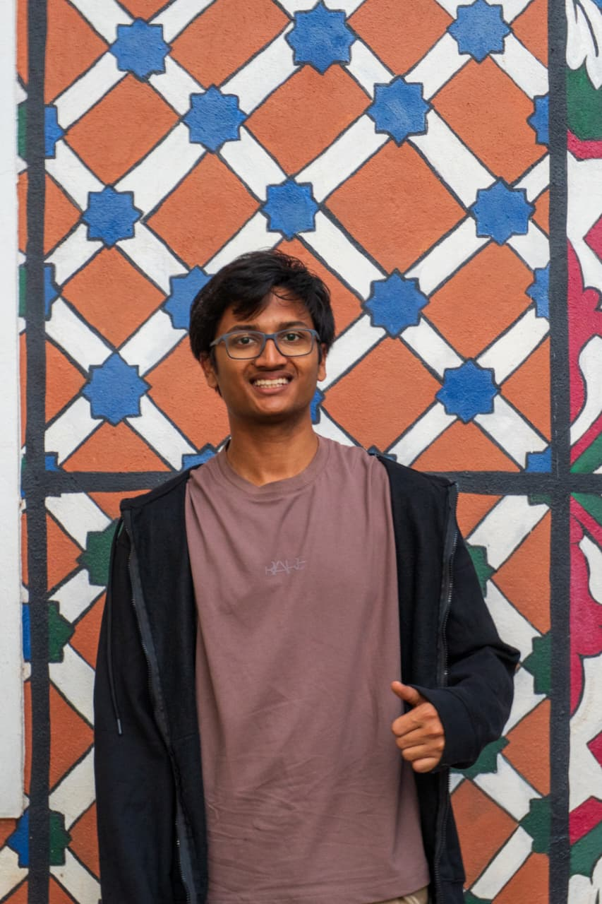

PM Internship Scheme Portal
🏆 Competed in Smart India Hackathon 2024 and built a full government internship portal — think LinkedIn, but for PM-endorsed student internships. Team BSoD shipped it in 36 hours of caffeine and code.

Hey — I'm a first-year IT student at MIT Manipal, and I build things that live close to the silicon.
I write C and C++, design embedded systems, and serve as an ODHS team member on Project PARIKSHIT — MIT Manipal's student satellite programme.
When I'm not pushing commits, I'm grinding competitive programming or poking at CTF challenges.
I'm a first-year B.Tech IT undergraduate at MIT Manipal with a taste for low-level problem solving. I enjoy working at the intersection of hardware and software — whether that's writing bare-metal C for a microcontroller or structuring a database query that needs to be fast.
On the satellite side, I'm an ODHS (On-board Data Handling System) team member on Project PARIKSHIT, MIT Manipal's student satellite initiative. I work on the data handling and storage subsystems that keep the satellite's housekeeping data reliable in orbit.
Outside formal projects I compete in programming contests, explore CTF security challenges, and pull up schematics for fun.
CGPA 8.88. Courses include operating systems, DBMS, design and analysis of algorithms, artificial intelligence, and management studies.
🏆 Competed in Smart India Hackathon 2024 and built a full government internship portal — think LinkedIn, but for PM-endorsed student internships. Team BSoD shipped it in 36 hours of caffeine and code.
🏠 How does a college hostel track 2,000 students, rooms, complaints, and mess dues? I built exactly that — in raw C, with file-based storage. No bloat, no frameworks, just pointers and grit.
🔍 AI can be racist, sexist, and just plain unfair — and most of the time nobody notices. FairLens puts AI models under a microscope to catch hidden biases before they reach the real world.
The best way to reach me is by email. I'm also on GitHub and LinkedIn.